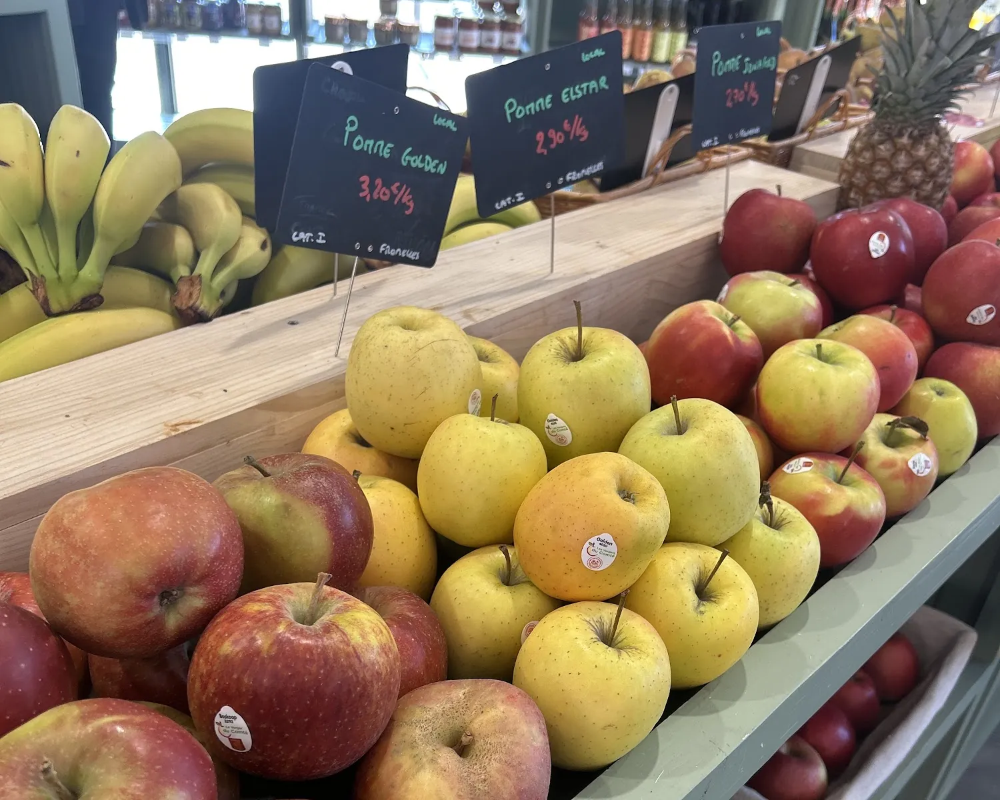
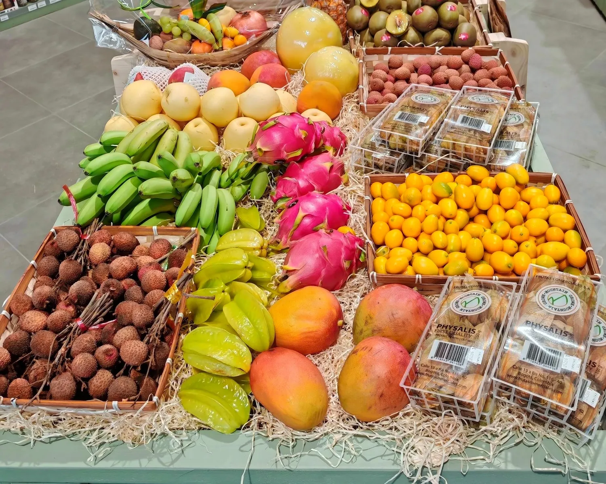
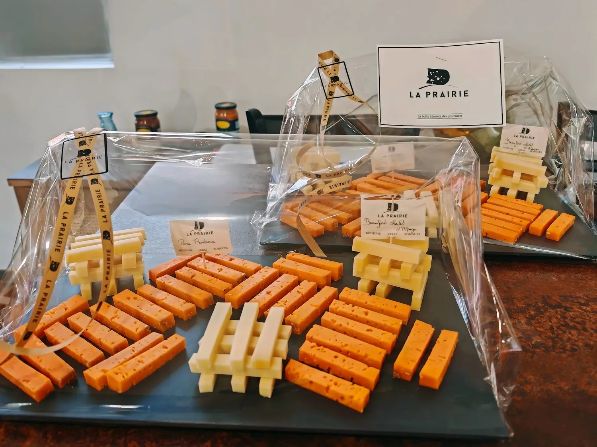
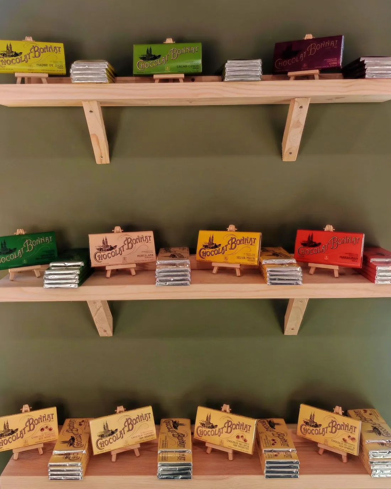
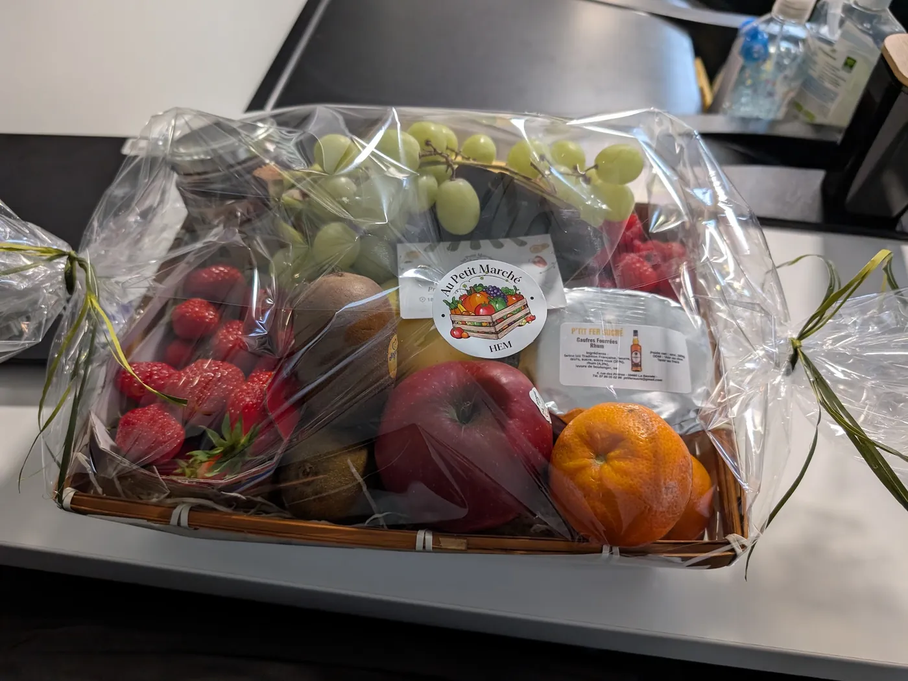
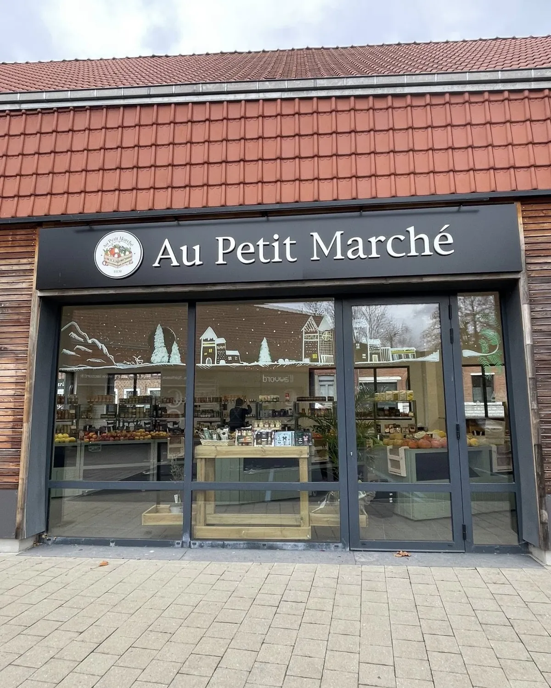
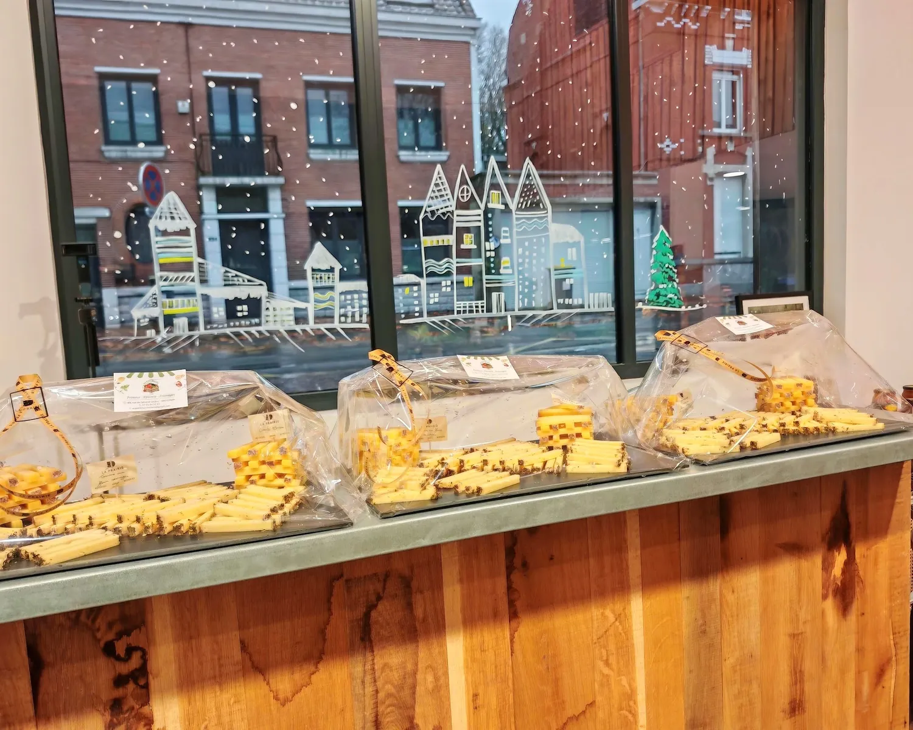
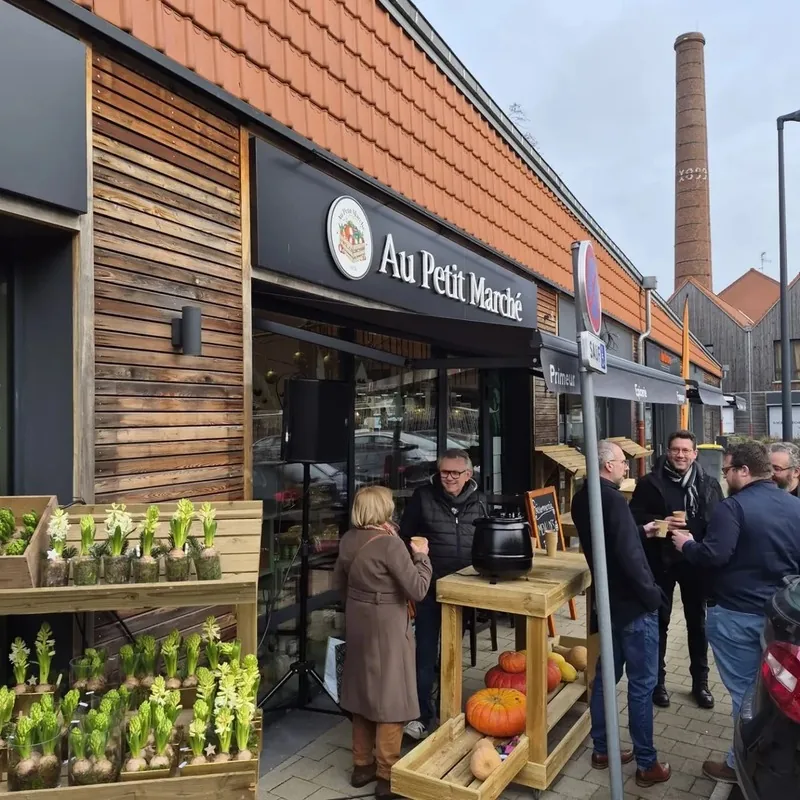

Primeur · épicerie fine · Hem
Au PetitMarché
Fruits et légumes « essentiellement locaux », fromages, chocolat, paniers à offrir, et des conseils que les clients citent dans leurs avis. Le primeur de proximité de la rue du Général Leclerc.
Du mardi au dimanche, dès 8 h
Pommes localesCoin fromagesPaniers garnis
Des pommes du coin aux fruits du bout du monde
Ce que montrent les photos du magasin, et ce qu'en disent ceux qui y font leurs courses.

Les pommes du coin
Golden, Elstar, rangées dans des caisses en bois. Sur les ardoises, un mot écrit à la craie verte revient d'une caisse à l'autre : « Local ».
« J’ai mangé une pomme après une journée de travail, j’avais oublié à quelle point cela pouvais être aussi goûtu et juteux […] »

Et le bout du monde
Litchis, pitayas roses, caramboles, mangues, kumquats, petites bananes : tout un étal de fruits exotiques, rangé par paniers sur le meuble vert sauge, à côté des légumes de saison.
« Un choix de légumes et de fruits variés et essentiellement locaux […] Un accueil et un conseil au top. »
Et pour les fines bouches

Le coin fromages
Dégustation sous cloche des fromages de La Prairie, fromager de Béthune, Arras et Bondues : Beaufort chalet d'alpage et bâtonnets de pâte orangée.
Que dire du fromage !Alexia D., avis Google

Le chocolat Bonnat
Les tablettes, présentées sur de petits chevalets, sur des étagères de bois clair contre le mur vert sauge.
Epicerie de qualité qui trouve un bon équilibre entre produits du quotidien et produits d’excellence.Alexia D., avis Google

Le panier qu'on offre
Raisin, fraises, pommes, agrumes et gaufres fourrées du P'tit Fer Sucré, sous cellophane, avec l'étiquette du magasin.
En recherche d'un cadeau, on m'a proposé un super panier de fruit.deni R., avis Google
Poissons et fruits de mer
« Produits d’excellente qualité, tant pour les fruits et légumes que les poissons et fruits de mer […] »Seb C., client, sur Google
Du bois, du vert sauge et des fruits partout
Une façade bardée de bois sous les tuiles, des caisses et des étals en bois clair, des meubles vert sauge, des ardoises écrites à la main. Et une vitrine qui se dessine aux couleurs de Noël.



Conseil.
Le mot revient dans trois avis sur cinq. On vient pour les fruits, on repart avec une idée.
« […] un superbe accueil, des commerçants à l’écoute et plein de bon conseil, je recommande ! […] »benjamin b., Google
« Conseils clients au top. Un vrai primeur de proximité. »Alexia D., Google
« […] gérants et personnel super sympas, service personnalisé et humain... on se sent enfin comme dans un village à Hem ! »Seb C., Google
La même maison qu'à Capinghem. « J’étais déjà allé dans leur autre magasin de Capinghem et l’ADN est le même..BRAVO » (Lionel B., sur Google)
« Rapidement devenu notre “lieu de ravitaillement” principal. »
Ouvert dès 8 h, six jours sur sept
Du mardi au samedi en continu, le dimanche matin
| lundi | fermé |
|---|---|
| mardi | 8 h – 19 h 30 |
| mercredi | 8 h – 19 h 30 |
| jeudi | 8 h – 19 h 30 |
| vendredi | 8 h – 19 h 30 |
| samedi | 8 h – 19 h 30 |
| dimanche | 8 h – 12 h 30 |
189 rue du Général Leclerc, 59510 Hem · à deux pas de la chapelle Sainte-Thérèse